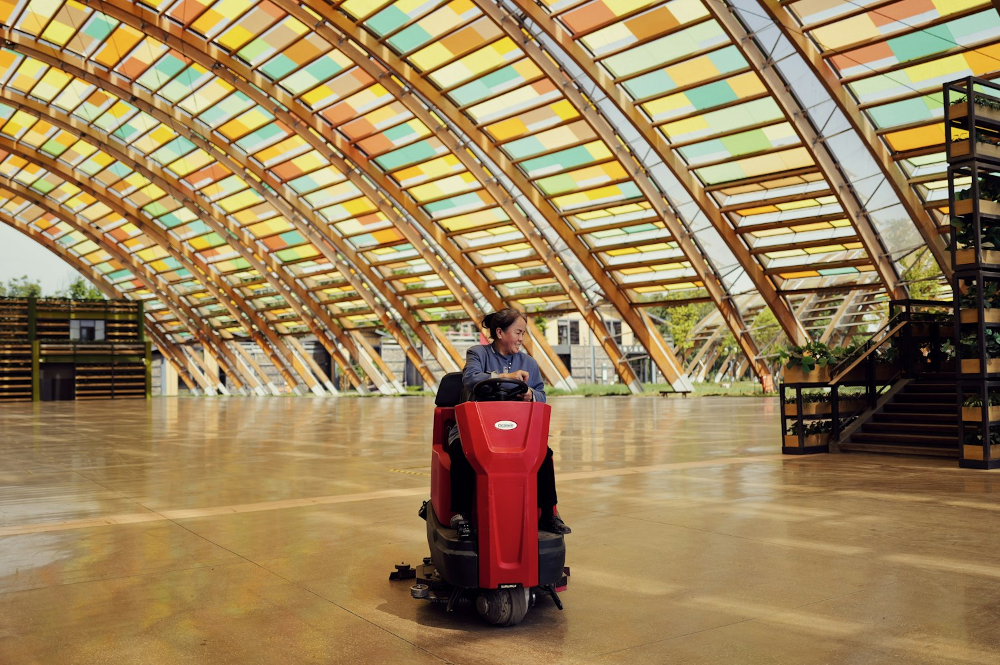
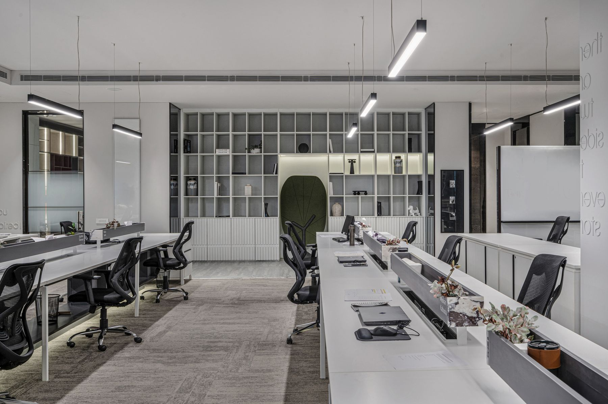
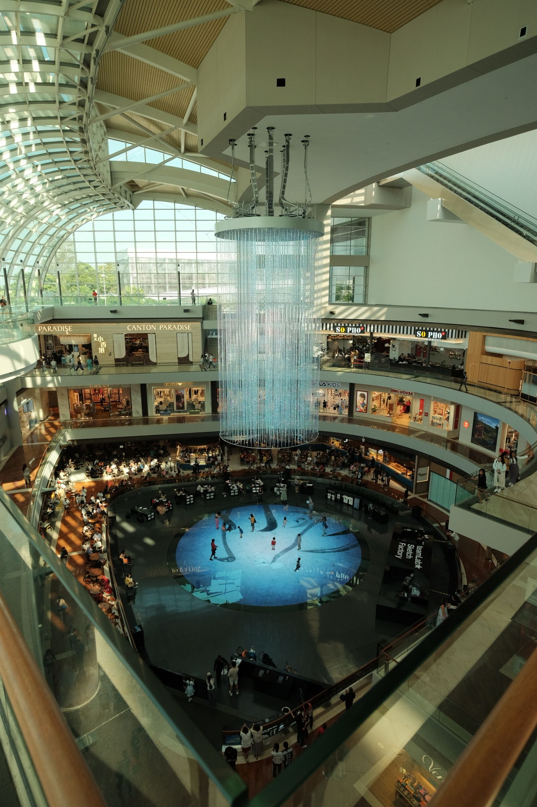

Understand the place
The people, the surfaces, the trading hours and the details that make your site different
Facility management & specialist cleaning
Considered care / Every space
Commercial cleaning, specialist floor care and
facility services shaped around your site
Every site has its own rhythm
We bring cleaning, floor care and site support together around the way your space works
From the floor underfoot
to the details overhead

01 / Commercial cleaningCleaning programmes for the spaces people use every day, with the scope and schedule built around your operation
A considered approach to floor cleaning and maintenance, starting with the surface, its condition and how the space is used
Attention to the parts of a building beyond everyday reach, with access and site requirements considered before work begins
Practical coordination of site presentation and service needs, with clear responsibilities and a point of contact
The people, the surfaces, the trading hours and the details that make your site different
The people, the surfaces, the trading hours and the details that make your site different
A considered scope brings the service, schedule and responsibilities into focus
A practical way to review the work, raise an issue and agree what needs attention
The service should fit the setting
Explore the needs of your space

Stock photography / Illustrative settingEntrances, floors and shared spaces all shape a visit
Plan the work around access, foot traffic and trading hours
The service you need, the way your business runs and what you want to improve
Understand the space, access and service requirements before defining the work
A clear scope, an appropriate schedule and shared expectations for delivery
Tell us what your facility needs
Total Care Facility Management